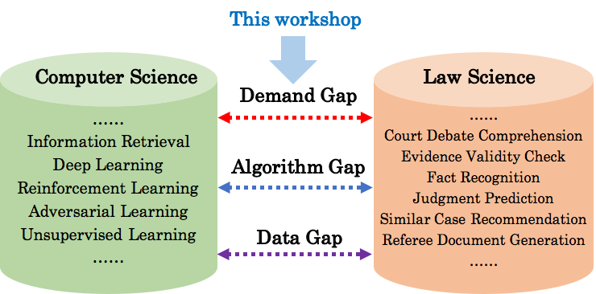

The 1st International Workshop on Legal Intelligence
Held in conjunction with SIGIR 2020（LegalAI@SIGIR2020）
News:The workshop video is uploaded for free downloading! We had a great workshop! Thank you very much for joining us! video/download
LegalAI2020
Welcome to Legal AI!
In the digital era, information retrieval, text/knowledge mining, and NLP techniques are playing increasingly vital roles in legal do- main. While the open datasets and innovative deep learning methodologies provide critical potentials, in the legal-domain, efforts need to be made to transfer the theoretical/algorithmic models into the real applications to assist users, lawyers, judges and the legal professions to solve the real problems. The objective of this work- shop is to aggregate studies/applications of text mining/retrieval and NLP automation in the context of classical/novel legal tasks, which address algorithmic, data and social challenges of legal intelligence. Keynote and invited presentations from industry and academic will be able to fill the gap between ambition and execution in the legal domain.

WORKSHOP PROGRAM
8:30 - 8:45AM -- Opening & Welcome
8:45 - 9:30AM -- Keynote 1: Legal Intelligence Research in Industry
Yating Zhang , Changlong Sun
9:30 - 10:15AM -- Keynote 2: On the Importance of Domain Knowledge for Computational Law
Douglas W. Oard
Bio: Douglas W. Oard is a Professor at the University of Maryland, College Park (USA), with joint appointments in the College of Information Studies (Maryland’s iSchool) and the University of Maryland Institute for Advanced Computer Studies (UMIACS). His research interests center around the use of emerging technologies to support information seeking. Additional information is available at http://terpconnect.umd.edu/~oard/.
Accepted Paper Presentation
10:15-11:00AM (each paper has 12min for presentation and 3 min for QA )
Paper Talk 1: Automatic Text Revision with Application to Legal Documents [PDF]
Yiquan Wu , Kun Kuang , Fei Wu , Zhejiang University
Paper Talk 2: AI-lead Court Debate Case Investigation [PDF]
Changzhen Ji , Conghui Zhu , Tiejun Zhao , Harbin Institute of Technology
Paper Talk 3: Judgment Prediction Based on Case Life Cycle [PDF]
Luyao Ma , Wei Ye , Peking University
Break for 10 min
Previous paper sharing
11:10 - 12:00AM : (each paper has 12 min)
Paper Talk 4: Legal Artificial Intelligence : Have You Lost a Piece from Jigsaw Puzzle? [PDF]
Xiaozhong Liu
Paper Talk 5: Legal Summarization for Multi-role Debate Dialogue via Controversy Focus Mining and Multi-task Learning [PDF]
Xinyu Duan
Paper Talk 6: Masking Orchestration: Multi-task Pretraining for Multi-role Dialogue Representation Learning [PDF]
Tianyi Wang
Paper Talk 7: Legal Intelligence for E-commerce: Multi-task Learning by Leveraging Multiview Dispute Representation [PDF]
Xin Zhou
CALL FOR PAPERS
The workshop will include original contributions on theories, methodologies, and applications of legal text/data mining, legal document retrieval,
machine learning, legal knowledge graph generation/mining, natural language processing, and legal knowledge representation in the legal ecosystem.
The scope of the workshop includes, but is not limited to, the following areas:
Legal information retrieval and related statutes/precedents detection
Legal knowledge graph creation and application
Legal case representation learning
Legal dialog and legal QA system
Legal document, e.g., verdict, generation
Court debate mining
Penalty prediction
Legal machine reading comprehension
Legal (open) dataset generation
Evaluation for legal tasks
Societal and ethical challenges of legal intelligence
Legal AI application and system
Computational social justice
Human factor for legal AI
We especially encourage workshop participates use the open le- gal datasets, e.g., Artificial Intelligence for Legal Assistance (AILA 2019) and CAIL 2019, and they can also create and share the publicly available dataset to motivate other scholars to further investigate this important domain.
IMPORTANT DATES
Paper submission (Long, Short, Demo): June 12, 2020
Notification to authors: July 7, 2020
Camera-ready: July 15, 2020
Workshop date: July 30, 2020
SUBMISSIONS
We welcome original research papers that present novel research ideas and we encourage submissions of greenhouse work, which present early stages of cutting-edge research and development. Position papers regarding work on the beginning, demo, and industry papers are also welcome.
All papers must be original and not simultaneously submitted to another journal or conference. The following paper categories are welcome:
Novel research papers in full (up to 8 pages) or short length (up to 4 pages)